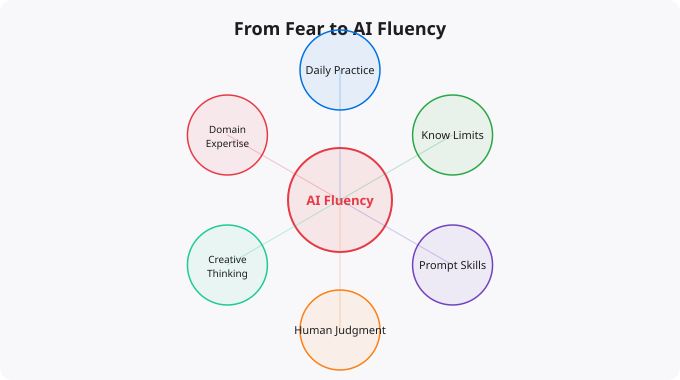

When ChatGPT launched in November 2022, it triggered two simultaneous reactions across the world: fascination and fear. Fascination because the capability was genuinely remarkable — a system that could write essays, debug code, explain concepts, and hold coherent conversations. Fear because people immediately began asking: what happens to my job? What happens to my career? What does this mean for human relevance? Two-plus years later, the people who have figured out how to work effectively with AI are pulling ahead. Those still avoiding or fearing it are falling behind.
The fear is not irrational. AI genuinely can perform tasks that previously required significant human time and expertise. Content writing, basic code generation, data analysis, image creation, customer service conversations, document summarization — all of these have AI tools that can produce output that was previously exclusively human territory. This has happened with every major technology transition in history. The printing press disrupted scribes. Industrial machinery disrupted craftsmen. Computers disrupted accounting clerks and typists. In each case, new roles emerged, productivity increased, and the nature of work shifted. The people who adapted thrived. Those who did not were displaced.
Much of the fear about AI comes from a misunderstanding of what AI is actually replacing. The popular narrative focuses on AI replacing all human cognitive work. A more accurate picture: AI is very good at pattern-matching tasks that have clear success criteria and large training datasets — writing generic content, producing standard code patterns, summarizing documents, classifying inputs, answering factual questions. AI performs significantly less well at tasks requiring genuine creativity and originality, nuanced judgment in novel situations, building trust-based human relationships, systems-level thinking integrating multiple domains, ethical reasoning in complex real-world contexts, and physical world interaction.
The implication is not that you are safe because your job is too complex for AI. It is that the valuable parts of most jobs are migrating up the skill and judgment ladder. The routine, predictable components of knowledge work are being automated. The complex, creative, relational, and judgment-heavy components are becoming more valuable.
The shift from fearing AI to leveraging AI starts with a mindset reframe: AI is a tool, and like all tools, its value depends on how skillfully it is used. A calculator does not replace the mathematician — it allows the mathematician to focus on harder problems while routine arithmetic is handled automatically. Getting there requires actual practice, not just acceptance in theory. You cannot develop AI fluency by reading about AI or watching demonstrations. You develop it by using AI tools daily, figuring out where they are genuinely helpful, learning their limitations, and integrating them into your actual workflow.
For people working in or learning technology, the opportunities to leverage AI are particularly rich. AI coding assistants like GitHub Copilot, Cursor, and Claude can suggest completions, explain unfamiliar code, help debug errors, generate boilerplate, and write tests. Learning to use these tools effectively — knowing when to accept suggestions, when to redirect, how to write prompts that produce useful code — is a skill that significantly multiplies programming productivity.
AI is also an extraordinary learning tool. Instead of struggling to understand an unfamiliar concept from documentation, you can ask AI to explain it at different levels of depth, provide analogies, give examples, and answer follow-up questions interactively. The speed of concept acquisition with good AI assistance is dramatically higher than without it. Technical documentation, reports, emails, presentations — all can be accelerated with AI assistance. The key skill is providing clear context and direction, then editing the output rather than accepting it blindly.
Understanding what AI cannot replace is as important as leveraging what it can do. The human value that remains irreplaceable includes accountability (someone must own decisions and outcomes), relationship and trust (clients hire people they trust, not tools), creative synthesis (combining ideas from disparate domains in genuinely novel ways), ethical judgment (navigating complex trade-offs with human values), and deep domain expertise built through years of experience. Develop these things deliberately. Use AI to handle the routine work so you can spend more time on high-value activities that require genuine human judgment and creativity.
The most powerful position in the AI era is AI multiplies me. The person who uses AI fluently to produce more, learn faster, and focus on higher-value work is not just keeping up — they are pulling ahead. The transition from fear to power starts with the decision to engage seriously with AI tools, build real fluency, and continuously develop the human skills that AI cannot replace. That combination is where the real opportunity is.
Artificial intelligence is evolving faster than almost any other technology domain. The specific tools, models, and capabilities that are current today will look different in a year. This makes staying current a genuine challenge — the half-life of specific technical knowledge is short. The strategies that work: follow the primary sources (research blogs from Anthropic, OpenAI, Google DeepMind, Hugging Face) rather than relying on summaries that may be outdated. Focus on underlying principles that transfer — model architecture concepts, evaluation methods, prompt engineering principles — rather than memorizing specific tool interfaces that will change. Build things with current tools to develop practical intuition, even knowing those specific tools will evolve. The professionals who navigate fast-moving fields best are those who can quickly assess new developments, extract the signal from the noise, and rapidly evaluate what is genuinely significant versus what is marketing.
Disclaimer:
This article is written for educational and informational purposes only.
It does not provide financial, legal, investment, or professional advice.
Cloud services, pricing, security, and practices may vary by provider,
region, and use case. Always verify information from official
documentation before making decisions.
There is a clear pattern in how people relate to AI tools. In phase one, they watch from the sidelines -- reading articles about AI, watching demos on YouTube, discussing whether AI will change everything. In phase two, they start experimenting -- trying ChatGPT for one task, using Copilot for a few lines of code. In phase three, they integrate AI into their daily workflow and start seeing compounding returns.
Most people are stuck between phases one and two. They know AI is powerful but have not crossed the threshold of making it genuinely useful. The crossing happens when you identify one specific, repetitive task in your work that AI can handle -- and you make AI your default for that task, not an occasional experiment.
# Week 1: One task, one tool
Pick ONE repetitive task you do every day:
- Drafting emails? Use Claude or ChatGPT
- Writing code? Use GitHub Copilot
- Summarising articles? Use a reading AI
- Creating images? Use Midjourney or Firefly
Commit to using AI for that one task for 7 days
# Week 2: Refine your prompting
Notice what works and what doesn't
Learn prompt engineering basics:
- Be specific about output format
- Give context about your audience
- Show examples of what you want
- Iterate on the first response
# Week 3-4: Expand to adjacent tasks
Once you trust AI for one task, expand:
Email drafting -> Document writing -> Presentation outlines
Code completion -> Code review -> Debugging assistance
Image generation -> Video scripts -> Social contentNot all AI fear is irrational. There are legitimate concerns worth understanding. Privacy: some AI tools train on user data -- read privacy policies and avoid putting confidential information into public AI tools. Accuracy: AI systems make mistakes and can generate plausible-sounding incorrect information -- always verify AI-generated facts. Dependency: over-reliance on AI tools can erode skills -- maintain the ability to work without them. These are genuine concerns that deserve thoughtful management.
But much AI fear is driven by headlines rather than reality. The fear that AI will "take everyone's job immediately" ignores the enormous complexity of most jobs and the slow pace at which organisations actually adopt new technology. The fear that "you need to be a programmer to use AI" ignores the increasingly accessible interfaces. The fear that "AI is always wrong" ignores the genuine quality of current systems for many tasks.
In every previous technology shift -- computers, smartphones, the internet -- people who became fluent with new tools early gained significant career advantages. The same is happening with AI. Companies are actively looking for people who can work effectively with AI tools, understand their limitations, and integrate them productively. "AI fluency" is becoming a valued skill across almost every field.
This does not mean you need to understand how transformer models work or write Python. It means: knowing which AI tools are effective for which tasks, being able to prompt effectively to get useful outputs, understanding when AI output needs verification, and being able to integrate AI into your existing workflows without friction.
Focus on what you do that AI cannot -- relationship management, contextual judgment, creative direction, accountability, and nuanced communication. Then actively use AI for the tasks it excels at, making you more productive. People who use AI effectively are not replaced by AI -- they become more valuable by delivering more output with the same time.
ChatGPT or Claude for writing, research, and analysis. Grammarly for writing assistance. Canva with AI for design. Adobe Firefly for images within Creative Cloud. GitHub Copilot for developers. Otter.ai for meeting transcription. Choose based on your actual work, not what is trending.
You can be meaningfully productive with ChatGPT or Claude in under an hour of genuine use. More sophisticated prompting takes a few weeks of regular use to develop. Unlike learning a programming language, AI tools are designed to be used immediately. The learning is iterative -- you get better as you use them more.
Yes. India is one of the fastest-growing tech markets globally. These skills are in high demand across startups, MNCs, and product companies in Bangalore, Hyderabad, Pune, and Mumbai.
Follow official documentation, tech blogs from practitioners, GitHub repositories, and communities like Dev.to, Hashnode, and Reddit. Avoid news that creates urgency without substance.
Official documentation first. Then practical tutorials. Then build real projects. SRJahir Tech articles are written from real production experience — bookmark the series that matches your learning goal.
Consistent daily practice for 3-6 months produces real, usable skills. The key is building projects, not just reading. Every article on SRJahir Tech includes practical examples you can implement today.
Yes. All articles on SRJahir Tech are completely free. No paywalls, no subscriptions. Quality technical education should be accessible to everyone, especially aspiring engineers in India.